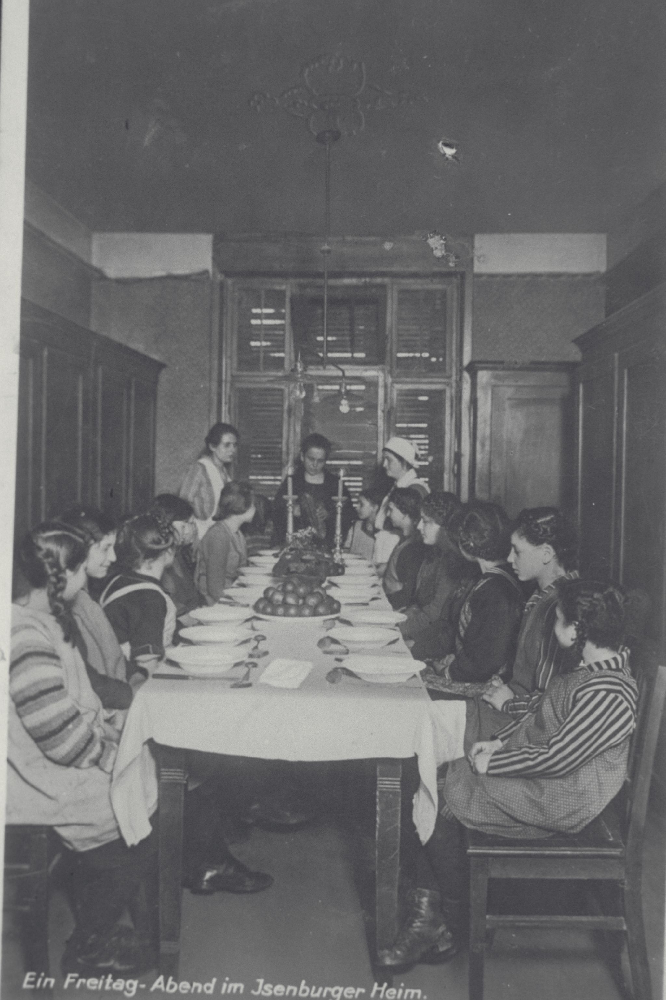

01 Judaism
Judaism is instrumental to lives of these women in multiple overlapping ways influencing their world views, and identities to which they were at times ascribed. Although none of these women can be considered “religious,” the role of Judaism was ever present in their lives.